Note
This page is under construction.
Pearloid
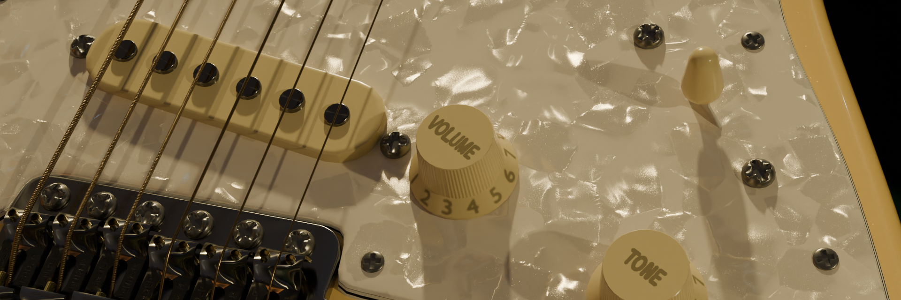
Pearloid is a type of synthetic material (celluloid plastic) designed to mimic the appearance of mother of pearl. It’s often used in making musical instruments and decorative items, to give a lustrous iridescent finish.
Inputs
Base
Color
Specifies the base color.
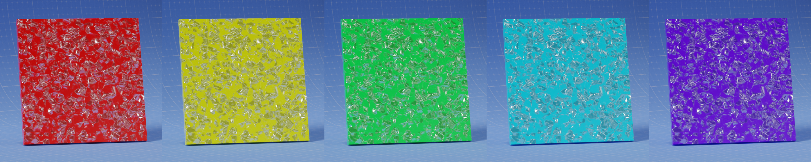
Roughness
Controls the roughness of the base layer.
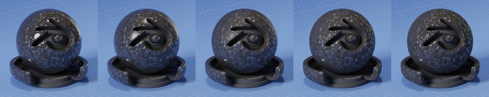
Transmission Weight
Controls the Transmission Weight of the base layer.
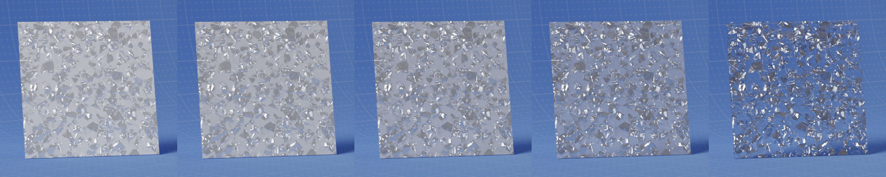
IOR
Controls the Index of Refraction of the base layer.
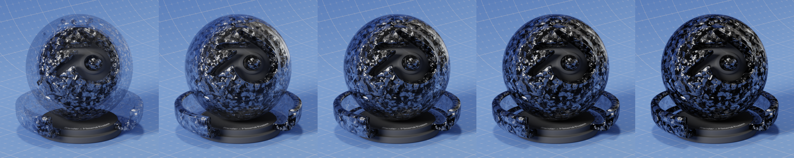
Flakes
Weight
This multiplier scales the reflection intensity received by the celluloid flakes.
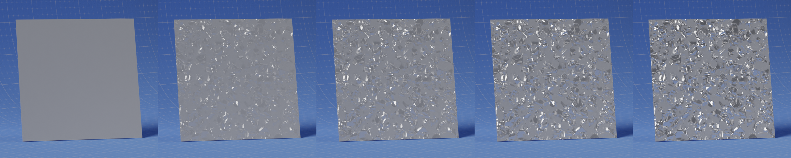
Density
Controls the density of the celluloid flakes.
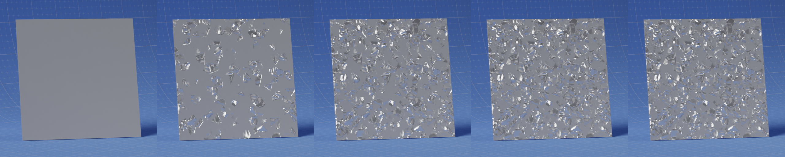
Tint
Sets the color of the flakes tint in the paint.
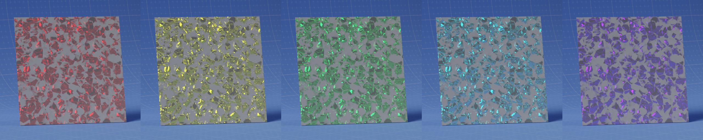
Scale
Adjusts the size of the flakes.
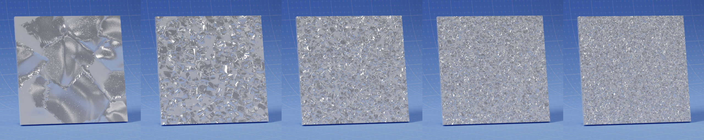
Randomness
The randomness of the flake shape.
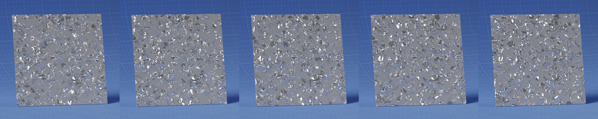
Grain Scale
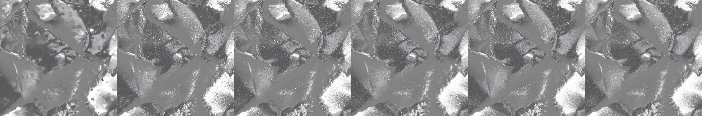
Roughness
Specifies the roughness of the flakes.
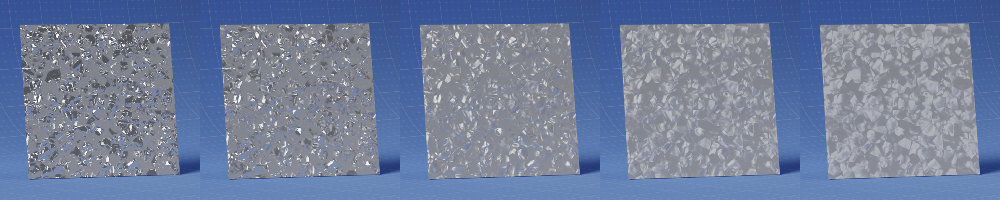
Absorption
Specifies the degree of light absorbed by the pigment before it is reflected off the flakes.
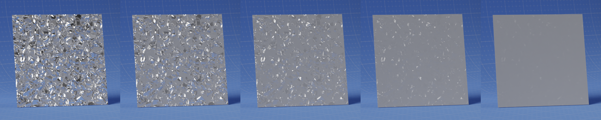
Seed
Flake Depth
Intensity
Controls the intensity of the depth seperation between flakes. At 0.0, all flakes have the same depth. At 1.0, flakes will have a large difference in depth.
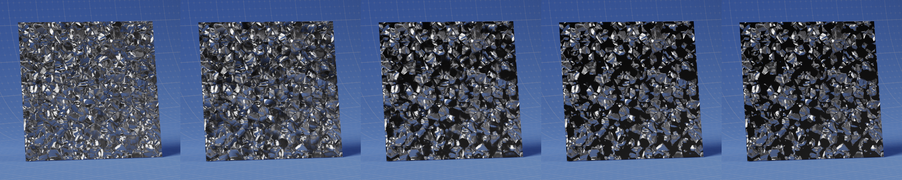
Threshold
Controls the depth at which flakes start to appear.
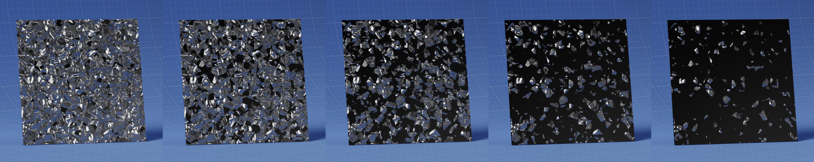
Flake Normal
Distance
Multiplier for the height value to control the overall distance.
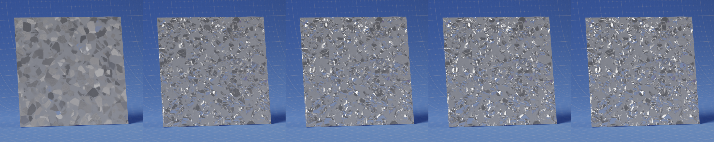
Roughness
Controls the normal map roughness.
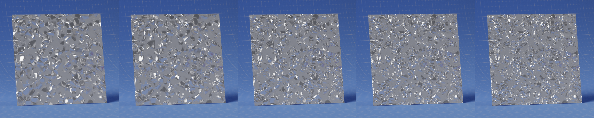
Variation
This parameter determines the extent to which flake orientation deviates from the surface normal. A value of 0.0 means minimal deviation, aligning flakes closely with the surface. Higher values intensify the flake effect, making it more pronounced.
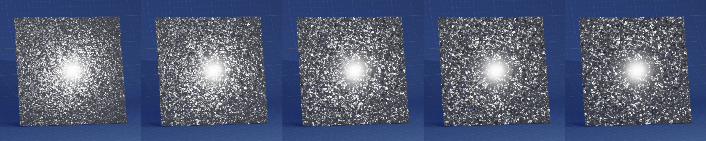
Pearlescence
Weight
Adjusts the intensity of the pearlescent effect.
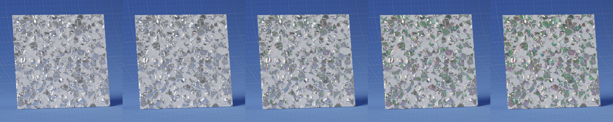
Thickness (nm)
Controls the thickness (nanometers) of the thinfilm layers.
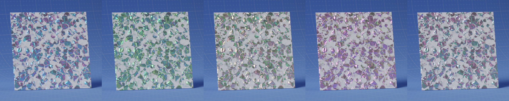
IOR
Diffraction
Weight
Controls the intensity of the diffraction effect.
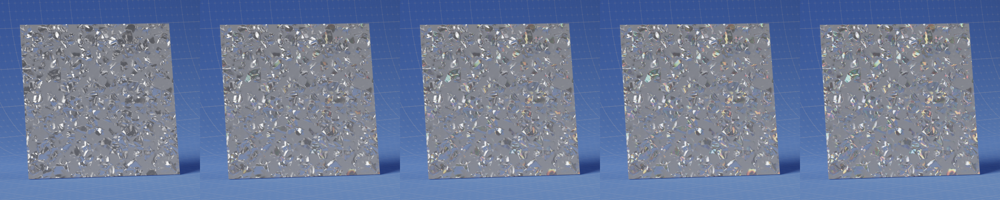
Spread
Adjusts the spread of the diffraction effect.
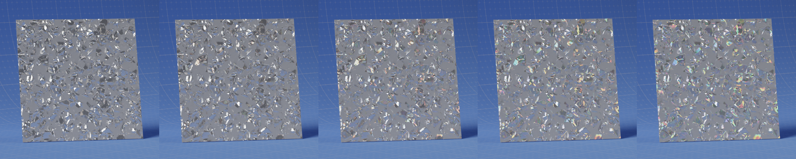
Tangent
Sets the tangent mapping for diffraction effects.
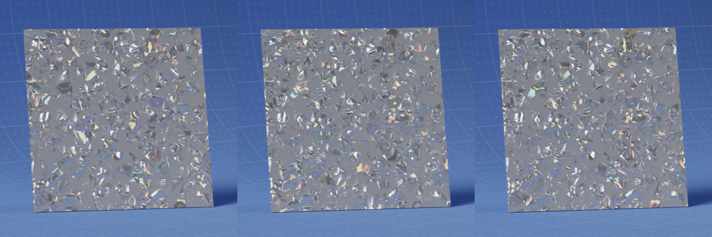
Coat
Weight
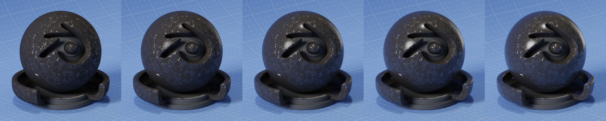
Roughness
Controls the roughness of the clear coat layer.
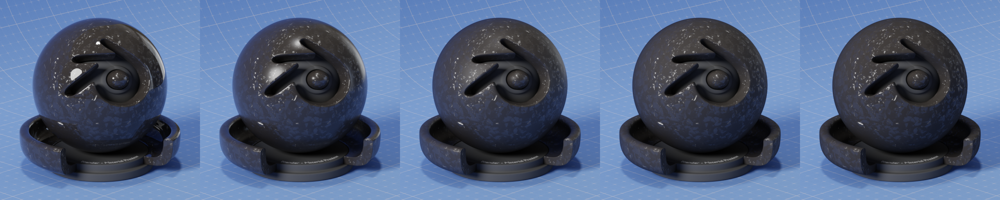
Tint
Specifies the tint of the clear coat layer.
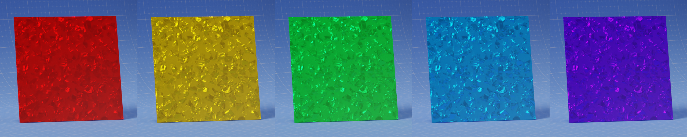
Outputs
Shader
Standard shader output.